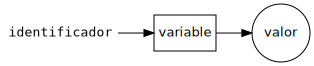

Programación imperativa
Ricardo Pérez López
IES Doñana, curso 2020/2021
1 Modelo de ejecución
1.1 Máquina de estados
La programación imperativa es un paradigma de programación basado en el concepto de sentencia.
Un programa imperativo está formado por una sucesión de sentencias que se ejecutan en un orden determinado, una tras otra.
Una sentencia es una instrucción del programa que lleva a cabo una de estas acciones:
Cambiar el estado interno del programa, normalmente mediante la llamada sentencia de asignación.
Cambiar el flujo de control del programa, haciendo que la ejecución se bifurque (salte) a otra parte del mismo.
El modelo de ejecución de un programa imperativo es el de una máquina de estados, es decir, una máquina que va pasando por diferentes estados a medida que el programa va ejecutándose.
El concepto de tiempo cobra mucha importancia en programación imperativa, ya que el estado del programa va cambiando a lo largo del tiempo conforme se van ejecutando las sentencias que lo forman.
A su vez, el comportamiento del programa depende del estado en el que se encuentre.
Eso significa que, ante los mismos datos de entrada, una función puede devolver valores distintos en momentos distintos.
En programación funcional, en cambio, el comportamiento de una función no depende del momento en el que se ejecute, ya que siempre devolverá los mismos resultados ante los mismos datos de entrada.
Eso significa que, para modelar el comportamiento de un programa imperativo, ya no nos vale el modelo de sustitución.
1.2 Secuencia de instrucciones
Un programa imperativo es una secuencia de instrucciones, y ejecutar un programa es provocar los cambios de estado que dictan las instrucciones en el orden definido por el programa.
Las instrucciones del programa van provocando transiciones entre estados, haciendo que la máquina pase de un estado al siguiente.
Para modelar el comportamiento de un programa imperativo tendremos que saber en qué estado se encuentra el programa, para lo cual tendremos que seguirle la pista desde su estado inicial al estado actual.
Eso básicamente se logra «ejecutando» mentalmente el programa instrucción por instrucción y llevando la cuenta de los valores ligados a sus identificadores.
1.3 Sentencias
A las instrucciones de un programa imperativo también se las denomina sentencias.
La principal diferencia entre una sentencia y una expresión es que las sentencias no denotan ningún valor, sino que son órdenes a ejecutar por el programa para cambiar el estado de éste.
Las expresiones se evalúan.
Las sentencias se ejecutan.
En muchos lenguajes imperativos (como ocurre con Python y Java) es posible colocar una expresión donde se espera una sentencia (aunque no al revés), si bien no suele resultar útil ya que, en ese caso, la ejecución de tal «sentencia» consistiría en evaluar la expresión, pero el resultado de dicha evaluación se perdería.
Sólo resultaría útil en caso de que la evaluación de la expresión provocara efectos laterales (cosa que estudiaremos en breve).
2 Asignación destructiva
2.1 Referencias al montículo
Todos los valores se almacenan en una zona de la memoria conocida como el montículo.
Cada vez que aparece un nuevo dato en el programa, el intérprete lo crea dentro del montículo a partir de una determinada dirección de la memoria y ocupando el espacio de memoria que se necesite en función del tamaño que tenga el dato.
Esa dirección de comienzo de la zona que ocupa el dato dentro del montículo se denomina referencia y sirve para identificar al dato y acceder al mismo.
En determinados casos, el intérprete no crea un nuevo dato sino que aprovecha otro exactamente igual que ya haya en el montículo para así ahorrar memoria (lo estudiaremos más adelante cuando hablemos de los alias).
2.2 Variables
Una variable es un lugar en la memoria donde se puede almacenar una referencia a un valor almacenado en el montículo.
Cuando una variable contiene una referencia a un valor, decimos que la variable hace referencia al valor o que apunta al valor.
Por abuso del lenguaje, también se suele decir que la variable almacena o contiene el valor, aunque eso no es estrictamente cierto.
El valor de una variable (o mejor dicho, la referencia que contiene) puede cambiar durante la ejecución del programa, haciendo que la variable pueda apuntar a distintos valores durante la ejecución del programa.
A partir de ahora, un identificador no se liga directamente con un valor, sino que tendremos:
Una ligadura entre un identificador y una variable.
La variable hace referencia al valor.

Este comportamiento es el propio de los lenguajes de programación orientados a objetos (como Python o Java), que son los lenguajes imperativos más usados a día de hoy.
Otros lenguajes imperativos más «clásicos» se comportan, en general, de una forma diferente.
En esos lenguajes (como C o Pascal), los valores se almacenan directamente dentro de las variables, es decir, las variables son contenedores que almacenan valores.
Por tanto, el compilador tiene que reservar espacio suficiente en la memoria para cada variable del programa de manera que dicha variable pueda contener un dato de un determinado tamaño y que ese dato «quepa» dentro de la variable.
De todos modos, algunos lenguajes de programación tienen un comportamiento híbrido, que combina ambas técnicas:
En Java, existen tipos primitivos (cuyos valores se almacenan directamente en las variables) y tipos referencia (cuyos valores se almacenan en el montículo y las variables contienen referencias a esos valores).
En C, los valores se almacenan dentro de las variables, pero es posible reservar memoria dinámicamente dentro del montículo y almacenar en una variable un puntero al comienzo de dicha zona de memoria, lo que permite crear y destruir datos en tiempo de ejecución.
2.3 Estado
La ligadura es la asociación que se establece entre un identificador y una variable.
El estado de una variable es el valor al que hace referencia una variable en un momento dado.
Por tanto, el estado es la asociación que se establece entre una variable y un valor (es decir, la referencia que contiene).

Tanto las ligaduras como los estados pueden cambiar durante la ejecución de un programa imperativo.
El estado de un programa es el conjunto de los estados de todas sus variables (más cierta información auxiliar gestionada por el intérprete).
2.4 Marcos en programación imperativa
Hasta ahora, los marcos contenían ligaduras entre identificadores y valores.
A partir de ahora, un marco contendrá:
Las ligaduras entre identificadores y variables, y
El estado de cada variable, es decir, las referencias que contiene cada variable en un momento dado.

- Para simplificar la representación gráfica, generalmente dibujaremos cada identificador al lado de su correspondiente variable (representando la ligadura), y la variable apuntando a su valor en el montículo (representando el estado).
El montículo como tal normalmente no lo dibujaremos, ya que sabemos que los valores se almacenan en él.
Igualmente, a veces tampoco dibujaremos el marco si se sobreentiende cuál es (o si no tiene importancia en ese momento).
A veces, y llegado el caso, también dibujaremos el valor directamente almacenado en la variable que le apunta, para simplificar (aunque sabemos que eso no es lo que ocurre en Python).
2.5 Sentencia de asignación
La forma más básica de cambiar el estado de una variable es usando la sentencia de asignación.
Es la misma instrucción que hemos estado usando hasta ahora para ligar valores a identificadores, pero ahora, en el paradigma imperativo, tiene otro significado:
El efecto que produce es el de almacenar, en la variable ligada al identificador
x, una referencia al valor4almacenado en el montículo.Normalmente se dice (mal dicho) que «la variable
xpasa a valer4».La asignación es destructiva porque al cambiarle el valor a una variable se destruye su valor anterior. Por ejemplo, si ahora hacemos:
El valor de la variable a la que está ligada el identificador
xpasa ahora a ser9, perdiéndose el valor4anterior.
Por abuso del lenguaje, se suele decir:
«se asigna el valor
9a la variablex»o
«se asigna el valor
9a la variable ligada al identificadorx»en lugar de la forma correcta:
«se asigna una referencia al valor
9a la variable ligada al identificadorx».Aunque esto simplifica las cosas a la hora de hablar, hay que tener cuidado, porque llegado el momento es posible tener:
Varios identificadores distintos ligados a la misma variable (ocurre en algunos lenguajes, aunque no en Python ni Java).
Un mismo identificador ligado a distintas variables en diferentes puntos del programa.
Varias variables apuntando al mismo valor.
Cada nueva asignación provoca un cambio de estado en el programa.
En el ejemplo anterior, el programa pasa de estar en un estado en el que la variable
xvale 4 a otro en el que la variable vale9.Al final, un programa imperativo se puede reducir a una secuencia de asignaciones realizadas en el orden dictado por el programa.
Este modelo de funcionamiento está estrechamente ligado a la arquitectura de un ordenador: hay una memoria formada por celdas que contienen datos que pueden cambiar a lo largo del tiempo según dicten las instrucciones del programa que controla al ordenador.
2.5.0.1 Un ejemplo completo
Cuando se ejecuta la siguiente instrucción en el ámbito global:
ocurre lo siguiente:
Se crea el valor
2500en el montículo y el intérprete devuelve una referencia al mismo.En determinadas situaciones, no crea un nuevo valor si ya había otro exactamente igual en el montículo, pero éste no es el caso.
El intérprete identifica a qué variable está ligado el identificador
xconsultando el marco global (si no existía dicha variable, la crea en ese momento y la liga ax).Almacena en la variable la referencia creada en el paso 1.
2.6 Evaluación de expresiones con variables
Al evaluar expresiones, las variables actúan de modo similar a las ligaduras de la programación funcional, pero ahora los valores de las variables pueden cambiar a lo largo del tiempo, por lo que deberemos seguirle la pista a las asignaciones que sufran dichas variables.
Todo lo visto hasta ahora sobre marcos, ámbitos, sombreado, entornos, etc. se aplica igualmente a las variables.
Por ejemplo:
2.7 Constantes
En programación funcional no existen las variables y un identificador sólo puede ligarse a un valor (un identificador ligado no puede re-ligarse a otro valor distinto).
En la práctica, eso significa que un identificador ligado actúa como un valor constante que no puede cambiar durante la ejecución del programa.
El valor de esa constante es el valor al que está ligado el identificador.
En programación imperativa, los identificadores se ligan a variables, que son las que realmente apuntan a los valores.
Una constante en programación imperativa sería el equivalente a una variable cuyo valor no puede cambiar durante la ejecución del programa.
Muchos lenguajes de programación permiten definir constantes, pero Python no es uno de ellos.
En Python, una constante es una variable más, pero es responsabilidad del programador no cambiar su valor durante todo el programa.
Python no hace ninguna comprobación ni muestra mensajes de error si se cambia el valor de una constante.
En Python, por convenio, los identificadores ligados a una variable con valor constante se escriben con todas las letras en mayúscula:
El nombre en mayúsculas nos recuerda que
PIes una constante.Aunque nada nos impide cambiar su valor (cosa que debemos evitar):
2.8 Tipado estático vs. dinámico
Cuando una variable tiene asignado un valor, al ser usada en una expresión actúa como si fuera ese valor.
Como cada valor tiene un tipo de dato asociado, también podemos hablar del tipo de una variable.
El tipo de una variable es el tipo del dato al que hace referencia la variable.
Si a una variable se le asigna otro valor de un tipo distinto al del valor anterior, el tipo de la variable cambia y pasa a ser el del nuevo valor que se le ha asignado.
Eso quiere decir que el tipo de una variable podría cambiar durante la ejecución del programa.
A este enfoque se le denomina tipado dinámico.
Lenguajes de tipado dinámico:
Son aquellos que permiten que el tipo de una variable cambie durante la ejecución del programa.
En contraste con los lenguajes de tipado dinámico, existen los llamados lenguajes de tipado estático.
En un lenguaje de tipado estático, el tipo de una variable se define una sola vez (en la fase de compilación o justo al empezar a ejecutarse el programa), y no puede cambiar durante la ejecución del mismo.
Definición:
Lenguajes de tipado estático:
Son aquellos que asocian forzosamente un tipo a cada variable del programa desde que comienza a ejecutarse y prohíben que dicho tipo cambie durante la ejecución del programa.
Estos lenguajes disponen de construcciones sintácticas que permiten declarar de qué tipo serán los datos que se pueden asignar a una variable.
Por ejemplo, en Java podemos hacer:
con lo que declaramos que a
xsólo se le podrán asignar valores de tipoString(es decir, cadenas) desde el primer momento y a lo largo de toda la ejecución del programa.
A veces, se pueden realizar al mismo tiempo la declaración del tipo y la asignación del valor:
Otros lenguajes disponen de un mecanismo conocido como inferencia de tipos, que permite deducir automáticamente el tipo de una variable.
Por ejemplo, en Java podemos hacer:
El compilador de Java deduce que la variable
xdebe ser de tipoStringporque se le está asignando una cadena (el valor"Hola").
Normalmente, los lenguajes de tipado estático son también lenguajes compilados y también fuertemente tipados.
Asimismo, los lenguajes de tipado dinámico suelen ser lenguajes interpretados y a veces también son lenguajes débilmente tipados.
Pero nada impide que un lenguaje de tipado dinámico pueda ser compilado, por ejemplo.
Los tres conceptos de:
Compilado vs. interpretado
Tipado fuerte vs. débil
Tipado estático vs. dinámico
son diferentes aunque están estrechamente relacionados.
2.9 Asignación compuesta
Los operadores de asignación compuesta nos permiten realizar operaciones sobre una variable y luego asignar el resultado a la misma variable.
Tienen la forma:
⟨asig_compuesta⟩ ::=identificador⟨op⟩=⟨expresión⟩
⟨op⟩ ::=+|-|*|/|%|//|**|&|||^|>>|<<
| Operador | Ejemplo | Equivalente a |
|---|---|---|
= |
x = 5 |
x = 5 |
+= |
x += 5 |
x = x + 5 |
-= |
x -= 5 |
x = x - 5 |
*= |
x *= 5 |
x = x * 5 |
/= |
x /= 5 |
x = x / 5 |
%= |
x %= 5 |
x = x % 5 |
//= |
x //= 5 |
x = x // 5 |
**= |
x **= 5 |
x = x ** 5 |
&= |
x &= 5 |
x = x & 5 |
|= |
x |= 5 |
x = x | 5 |
^= |
x ^= 5 |
x = x ^ 5 |
>>= |
x >>= 5 |
x = x >> 5 |
<<= |
x <<= 5 |
x = x << 5 |
2.10 Asignación múltiple
Con la asignación múltiple podemos asignar valores a varias variables al mismo tiempo en una sola sentencia.
La sintaxis es:
⟨asig_múltiple⟩ ::= ⟨lista_identificadores⟩=⟨lista_expresiones⟩
⟨lista_identificadores⟩ ::=identificador(,identificador)*
⟨lista_expresiones⟩ ::= ⟨expresión⟩(,⟨expresión⟩)*con la condición de que tiene que haber tantos identificadores como expresiones.
Por ejemplo:
asigna el valor
10axy el valor20ay.
3 Mutabilidad
3.1 Estado de un dato
Ya hemos visto que en programación imperativa es posible cambiar el estado de una variable asignándole un nuevo valor (un nuevo dato).
Al hacerlo, no estamos cambiando el valor en sí, sino que estamos sustituyendo el valor de la variable por otro nuevo, mediante el uso de la asignación destructiva.
Sin embargo, también existen valores que poseen su propio estado interno y es posible cambiar dicho estado, no asignando un nuevo valor a la variable que lo contiene, sino modificando el contenido de dicho valor.
Es decir: no estaríamos cambiando el estado de la variable (haciendo que ahora contenga un nuevo valor) sino el estado interno del propio valor contenido dentro de la variable.
Los valores que permiten cambiar su estado interno se denominan mutables.
3.2 Tipos mutables e inmutables
En Python existen tipos cuyos valores son inmutables y otros que son mutables.
Un valor inmutable es aquel cuyo estado interno no puede cambiar durante la ejecución del programa.
Los tipos inmutables en Python son los números (
intyfloat), los booleanos (bool), las cadenas (str), las tuplas (tuple), los rangos (range) y los conjuntos congelados (frozenset).Un valor mutable es aquel cuyo estado interno (normalmente, su contenido) puede cambiar durante la ejecución del programa.
El principal tipo mutable en Python es la lista (
list), pero también están los conjuntos (set) y los diccionarios (dict).
3.2.1 Inmutables
- Un valor de un tipo inmutable no puede cambiar su estado interno.


- Lo que hace la asignación
x = 7no es cambiar el contenido del valor4, sino hacer que la variablexcontenga otro valor distinto (el valor4en sí mismo no se cambia internamente en ningún momento).
Con las cadenas sería exactamente igual.
Si tenemos:

y luego hacemos:
se crea una nueva cadena y se la asignamos a la variable
x.Es decir: la cadena
'hola'original no se cambia (p. ej., no se le añade' manolo'al final), sino que se sustituye por una nueva.


Aunque las cadenas son datos inmutables, también son datos compuestos y podemos acceder individualmente a sus elementos componentes y operar con ellos aunque no podamos cambiarlos.
Para ello podemos usar las operaciones comunes a toda secuencia de elementos (una cadena también es una secuencia de caracteres):
| Operación | Resultado |
|---|---|
x\ in \ s |
True si x está en s |
x\ not in \ s |
True si x no está en s |
s[i] |
(Indexación) El i-ésimo elemento de s, empezando por 0 |
s[i:j] |
(Slicing) Rodaja de s desde i hasta j |
s[i:j:k] |
Rodaja de s desde i hasta j con paso k |
s.index(x) |
Índice de la primera aparición de x en s |
s.count(x) |
Número de veces que aparece x en s |
- El operador de indexación consiste en acceder al elemento situado en la posición indicada entre corchetes:
- El slicing (hacer rodajas) es una operación que consiste en obtener una subsecuencia a partir de una secuencia, indicando los índices de los elementos inicial y final de la misma:
3.2.2 Mutables
Los valores de tipos mutables, en cambio, pueden cambiar su estado interno durante la ejecución del programa.
El tipo mutable más frecuente es la lista.
Una lista es como una tupla que puede cambiar sus elementos, aumentar o disminuir de tamaño (puede cambiar su contenido y, por tanto, su estado).
Al cambiar el estado interno de una lista no se crea una nueva lista, sino que se modifica la ya existente:
![La lista antes de cambiar x[1]](images/cambio-estado-lista-antes.svg)
x[1]![La lista después de cambiar x[1]](images/cambio-estado-lista-despues.svg)
x[1]Las listas son secuencias mutables y, como tales, se pueden modificar usando ciertas operaciones:
Los operadores de indexación y slicing combinados con
=ydel:+-----+-----+-----+-----+-----+-----+ l | 124 | 333 | 'a' | 3.2 | 9 | 53 | +-----+-----+-----+-----+-----+-----+ 0 1 2 3 4 5 6 -6 -5 -4 -3 -2 -1Métodos como
append,clear,insert,remove,reverseosort.
Las siguientes tablas muestran todas las operaciones que nos permiten modificar secuencias mutables.
(\underline{s} y \underline{t} son listas, y \underline{x} es un valor cualquiera)
| Operación | Resultado |
|---|---|
s[i] = x |
El elemento i-ésimo de s se sustituye por x |
s[i:j] = t |
La rodaja de s desde i hasta j se sustituye por t |
s[i:j:k] = t |
Los elementos de s[i:j:k] se sustituyen por t |
del \ s[i:j] |
Elimina los elementos de s[i:j]Equivale a hacer s [i:j] = [] |
del \ s[i:j:k] |
Elimina los elementos de s[i:j:k] |
| Operación | Resultado |
|---|---|
s.append(x) |
Añade x al final de s Equivale a hacer s [len(s):len(s)] = [x] |
s.clear() |
Elimina todos los elementos de s Equivale a hacer del \ s[:] |
s.extend(t) ós += t |
Amplía s con el contenido de t Equivale a hacer s [len(s):len(s)] = t |
s.insert(i, x) |
Inserta x en s en el índice i Equivale a hacer s [i:i] = [x] |
s.pop([i=-1]) |
Devuelve el elemento i-ésimo y lo elimina de s |
s.remove(x) |
Elimina el primer elemento de s que sea igual a x |
s.reverse() |
Invierte los elementos de s |
Partiendo de x = [8, 10, 7, 9]:
| Ejemplo | Valor de x después |
|---|---|
x.append(14) |
[8, 10, 7, 9, 14] |
x.clear() |
[] |
x.insert(3, 66) |
[8, 10, 7, 66, 9] |
x.remove(7) |
[8, 10, 9] |
x.reverse() |
[9, 7, 10, 8] |
3.3 Alias de variables
Cuando una variable que tiene un valor se asigna a otra, ambas variables pasan a tener el mismo valor (lo comparten), produciéndose un fenómeno conocido como alias de variables.
Esto se debe a que las variables almacenan referencias a los valores, no los valores en sí mismos.

No es lo mismo cambiar el valor que cambiar el contenido del valor.
Cambiar el contenido es algo que sólo se puede hacer si el valor es mutable (por ejemplo, cambiando un elemento de una lista):
- Cambiar el valor es algo que siempre se puede hacer (da igual la mutabilidad) simplemente asignando a la variable un nuevo valor:

El intérprete puede crear alias de variables implícitamente para ahorrar memoria y sin que seamos conscientes de ello.
No tiene mucha importancia práctica, aunque es interesante saberlo en ciertos casos.
Por ejemplo, el intérprete de Python crea internamente todos los números enteros comprendidos entre -5 y 256, por lo que todas las variables de nuestro programa que contengan el mismo valor dentro de ese intervalo compartirán el mismo valor (serán alias):


- También crea valores compartidos cuando contienen exactamente las mismas cadenas.

- El intérprete aprovecharía el dato ya creado y no crearía uno nuevo, para ahorrar memoria.
También se comparten valores si se usa el mismo dato varias veces.
Por ejemplo, si hacemos:
nos quedaría:

- Y si ahora hacemos:
nos quedaría:

3.3.1 Recolección de basura
En el momento en que un valor se vuelva inaccesible (cosa que ocurrirá cuando no haya ninguna variable en el entorno que contenga una referencia a dicho valor), el intérprete lo marcará como candidato para ser eliminado.
Cada cierto tiempo, el intérprete activará el recolector de basura, que es un componente que se encarga de liberar de la memoria a los valores que están marcados como candidatos para ser eliminados.
Por tanto, el programador Python no tiene que preocuparse de gestionar manualmente la memoria ocupada por los datos que componen su programa.
Por ejemplo:
lista1 = [1, 2, 3] # crea la lista y guarda una referencia a ella en lista1 lista2 = lista1 # almacena en lista2 la referencia que hay en lista1A partir de ahora, ambas variables apuntan al mismo dato.
del lista1 # elimina una referencia pero el dato aún tiene otra del lista2 # elimina la otra referencia y ahora el dato es inaccesibleDesde este momento, la próxima vez que se active el recolector de basura se active, eliminará la lista.
3.3.2 id
Para saber si dos variables comparten el mismo dato, se puede usar la función
id.La función
iddevuelve un identificador único para cada dato.Por tanto, si dos variables tienen el mismo
id, significa que el valor que contienen es realmente el mismo valor.Normalmente, el
idde un valor se corresponde con la dirección de memoria donde está almacenado dicho valor.
3.3.3 is
Otra forma de comprobar si dos datos son realmente el mismo dato en memoria (es decir, si son idénticos) es usar el operador
is, que comprueba la identidad de un dato:Su sintaxis es:
⟨is⟩ ::= ⟨valor1⟩is⟨valor2⟩Es un operador relacional que devuelve
Truesi ⟨valor1⟩ y ⟨valor2⟩ son el mismo dato en memoria (es decir, si se encuentran almacenados en la misma celda de la memoria y, por tanto, son idénticos) yFalseen caso contrario.Lo normal es usarlo con variables y, en tal caso, devuelve
Truesi los datos que almacenan las variables son realmente el mismo dato.No tiene sentido usarlo con literales (y el intérprete lo advierte).
En la práctica, equivale a hacer
id(⟨valor1⟩) == id(⟨valor2⟩)
4 Cambios de estado ocultos
4.1 Funciones puras
Las funciones puras son aquellas que cumplen que:
su valor de retorno depende únicamente del valor de sus argumentos, y
calculan su valor de retorno sin provocar cambios de estado observables en el exterior de la función.
Una llamada a una función pura se puede sustituir libremente por su valor de retorno sin afectar al resto del programa (es lo que se conoce como transparencia referencial).
Las funciones puras son las únicas que existen en programación funcional.
4.2 Funciones impuras
Por contraste, una función se considera impura:
si su valor de retorno o su comportamiento dependen de algo más que de sus argumentos, o
si provoca cambios de estado observables en el exterior de la función.
En éste último caso decimos que la función provoca efectos laterales.
Toda función que provoca efectos laterales es impura, pero no todas las funciones impuras provocan efectos laterales (puede ser impura porque su comportamiento se vea afectado por los efectos laterales provocados por otras partes del programa).
4.3 Efectos laterales
Un efecto lateral es cualquier cambio de estado llevado a cabo por una parte del programa (normalmente, una función) que puede observarse desde otras partes del mismo, las cuales podrían verse afectadas por él de una manera poco evidente o impredecible.
Una función puede provocar efectos laterales, o bien verse afectada por efectos laterales provocados por otras partes del programa.
En cualquiera de estos casos, tendríamos una función impura.
Los casos típicos de efectos laterales en una función son:
Cambiar el valor de una variable global.
Cambiar el estado de un argumento mutable.
Realizar una operación de entrada/salida.
4.4 Transparencia referencial
En un lenguaje imperativo se pierde la transparencia referencial, ya que ahora el valor de una función puede depender no sólo de los valores de sus argumentos, sino también además de los valores de las variables libres que ahora pueden cambiar durante la ejecución del programa:
Por tanto, cambiar el valor de una variable global (en cualquier parte del programa) es considerado un efecto lateral, ya que puede alterar el comportamiento de otras partes del programa de formas a menudo impredecibles o poco evidentes.
Cuando el efecto lateral lo produce la propia función también estamos perdiendo transparencia referencial, pues en tal caso no podemos sustituir libremente la llamada a la función por su valor de retorno, ya que ahora la función hace algo más que calcular dicho valor, y ese algo es observable fuera de la función.
Por ejemplo, una función que imprime por la pantalla o escribe en un archivo del disco está provocando un efecto observable fuera de la función, por lo que tampoco es una función pura y, por tanto, en ella no se cumple la transparencia referencial.
Lo mismo pasa con las funciones que modifican algún argumento mutable. Por ejemplo:
Los efectos laterales hacen que sea muy difícil razonar sobre el funcionamiento del programa, porque las funciones impuras no pueden verse como simples correspondencias entre los datos de entrada y el resultado de salida, sino que además hay que tener en cuenta los efectos ocultos que producen en otras partes del programa.
Por ello, se debe evitar, siempre que sea posible, escribir funciones impuras.
Ahora bien: muchas veces, la función que se desea escribir tiene efectos laterales porque esos son, precisamente, los efectos deseados.
- Por ejemplo, una función que actualice los salarios de los empleados en una base de datos, a partir del salario base y los complementos.
En ese caso, es importante documentar adecuadamente la función para que, quien desee usarla, sepa perfectamente qué efectos produce más allá de devolver un resultado.
4.5 Entrada y salida por consola
Nuestro programa puede comunicarse con el exterior realizando operaciones de entrada/salida.
Interpretamos la palabra exterior en un sentido amplio; por ejemplo:
- El teclado
- La pantalla
- Un archivo del disco duro
- Otro ordenador de la red
La entrada/salida por consola se refiere a las operaciones de lectura de datos por el teclado y escritura por la pantalla.
Las operaciones de entrada/salida se consideran efectos laterales porque producen cambios en el exterior o pueden hacer que el resultado de una función dependa de los datos leídos y, por tanto, no depender sólo de sus argumentos.
4.5.1 print
La función
printimprime (escribe) por la salida (normalmente la pantalla) el valor de una o varias expresiones.Su signatura es:
print(⟨expresión⟩(, ⟨expresión⟩)* [, sep=⟨expresión⟩][, end=⟨expresión⟩])
El
sepes el separador y su valor por defecto es' '(un espacio).El
endes el terminador y su valor por defecto es'\n'(el carácter de nueva línea).Las expresiones se convierten en cadenas antes de imprimirse.
Por ejemplo:
4.5.1.1 Paso de argumentos por palabras clave
Normalmente, los argumentos se pasan a los parámetros posicionalmente (lo que se denomina paso de argumentos posicional).
Según este método, los argumentos se asignan a los parámetros correspondientes según la posición que ocupan en la llamada a la función (el primer argumento se asigna al primer parámetro, el segundo al segundo parámetro y así sucesivamente).
En Python también existe el paso de argumentos por palabra clave, donde cada argumento se asigna a su parámetro indicando en la llamada el nombre del parámetro y el valor de su argumento correspondiente separados por un
=, como si fuera una asignación.Esta técnica se usa en la función
printpara indicar el separador o el terminador de la lista de expresiones a imprimir.Por ejemplo:
4.5.1.2 El valor None
Es importante resaltar que la función
printno devuelve el valor de las expresiones, sino que las imprime (provoca el efecto lateral de cambiar la pantalla haciendo que aparezcan nuevos caracteres).La función
printcomo tal no devuelve ningún valor, pero como en Python todas las funciones devuelven algún valor, en realidad lo que ocurre es que devuelve un valorNone.Nonees un valor especial que significa «ningún valor» y se utiliza principalmente para casos en los que no tiene sentido que una función devuelva un valor determinado, como es el caso deprint.Pertenece a un tipo de datos especial llamado
NoneTypecuyo único valor posible esNone, y para comprobar si un valor esNonese usa ⟨valor⟩is None.Podemos comprobar que, efectivamente,
printdevuelveNone:
4.5.2 input
La función
inputlee datos introducidos desde la entrada (normalmente el teclado) y devuelve el valor del dato introducido, que siempre es una cadena a la cual se le ha eliminado el posible salto de línea final.Su signatura es:
input([prompt: str ])->str
Por ejemplo:
Provoca el efecto lateral de alterar el estado de la consola imprimiendo el prompt y esperando a que desde el exterior se introduzca el dato solicitado (que en cada ejecución podrá tener un valor distinto).
Eso hace que sea impura por partida doble: provoca un efecto lateral y puede devolver un resultado distinto cada vez que se la llama.
4.6 Entrada y salida por archivos
Para leer y/o escribir datos en un archivo, los pasos a seguir son (en este orden):
Abrir el archivo en el modo adecuado con
open.Realizar las operaciones deseadas sobre el archivo.
Cerrar el archivo con
close.
4.6.1 open
- La función
openabre un archivo y devuelve un objeto que lo representa. Su signatura es:
open(nombre: str [, modo: str])
El nombre es una cadena que contiene el nombre del archivo a abrir.
El modo es otra cadena que contiene caracteres que describen de qué forma se va a usar el archivo.
El valor devuelto es un objeto cuyo tipo depende del modo en el que se ha abierto el archivo.
Los valores posibles de modo son:
Carácter Significado 'r'Abre el archivo para lectura (valor predeterminado) 'w'Abre para escritura (si el archivo ya existe lo borrará) 'x'Abre para creación exclusiva (falla si el archivo ya existe) 'a'Abre para escritura, añadiendo al final del archivo si ya existe 'b'Modo binario 't'Modo texto (valor predeterminado) '+'Abre para lectura y escritura El modo predeterminado es
'r'(abrir para lectura en modo texto, sinónimo de'rt').Los modos
'w+'y'w+b'abren el archivo y lo borra si ya existe.Los modos
'r+'y'r+b'abren el archivo sin borrarlo.
Normalmente, los archivos se abren en modo texto, lo que significa que se leen y se escriben cadenas (valores de tipo
str) desde y hacia el archivo, las cuales se codifican según una codificación específica que depende de la plataforma.Por ejemplo, los saltos de línea se escriben como
\nen Unix o\r\nen Windows, y se leen siempre como\n.Al añadir una
'b'en el modo se abre el archivo en modo binario. En tal caso, los datos se leen y se escriben en forma de objetos de tipobytes.El modo binario es el que debe usarse cuando se trabaje con archivos que no contengan texto (datos binarios crudos).
Ejemplo:
El tipo de dato que devuelve
opendepende de cómo se ha abierto el archivo:Si se ha abierto en modo texto, devuelve un
TextIOWrapper.Si se ha abierto en modo binario, entonces depende:
En modo sólo lectura, devuelve un
BufferedReader.En modo sólo escritura o añadiendo al final, devuelve un
BufferedWriter.En modo lectura/escritura, devuelve un
BufferedRandom.
4.6.2 read
- Para leer de un archivo, se puede usar el método
readsobre el objeto que devuelve la funciónopen. Su signatura es:
⟨archivo⟩.read([tamaño: str])
El método devuelve una cadena (tipo
str) si el archivo se abrió en modo texto, o un objeto de tipobytessi se abrió en modo binario.El archivo contiene un puntero interno que indica hasta dónde se ha leído en el mismo. Cada vez que se llama al método
read, se mueve ese puntero para que en posteriores llamadas se continúe leyendo desde ese punto.Si se alcanza el final del archivo, se devuelve la cadena vacía (
'').El parámetro tamaño es opcional:
Si se omite o es negativo, se devuelve todo lo que hay desde la posición actual del puntero hasta el final del archivo.
En caso contrario, se leerán y devolverán al menos tantos caracteres (en modo texto) o bytes (en modo binario) como se haya indicado.
Ejemplos de lectura de todo el archivo:
Ejemplos de lectura del archivo en varios trozos:
4.6.3 readline
El método
readlinetambién sirve para leer de un archivo y también se ejecuta sobre el objeto que devuelveopen(y que representa al archivo abierto).Su signatura es:
⟨archivo⟩.readline([tamaño: str])
readlinedevuelve una línea del archivo, dejando el carácter de salto de línea (\n) al final.El salto de línea sólo se omite cuando es la última línea del archivo y éste no acaba en salto de línea.
Si devuelve una cadena vacía (
''), significa que se ha alcanzado el final del archivo.Si se devuelve una cadena formada sólo por
\n, significa que es una línea en blanco (una línea que sólo contiene un salto de línea).
El parámetro tamaño es opcional:
Si se omite o es negativo, se devuelve todo desde la posición actual del puntero hasta el final de la línea.
En caso contrario, se leerán y devolverán al menos tantos caracteres (en modo texto) o bytes (en modo binario) como se haya indicado.
Ejemplos:
4.6.4 write
El método
writesirve para escribir en un archivo y se ejecuta sobre el objeto que devuelveopen(y que representa al archivo abierto).Su signatura es:
⟨archivo⟩.write(contenido)
El método escribe el contenido en el ⟨archivo⟩. Ese contenido debe ser una cadena si el archivo se abrió en modo texto, o un valor de tipo
bytessi se abrió en modo binario.Al escribir, modifica el puntero interno del archivo.
Devuelve el número de caracteres o de bytes que se han escrito, dependiendo de si se abrió en modo texto o en modo binario.
También se puede usar
printpara escribir en un archivo.En la práctica, no hay mucha diferencia entre usar
printy usarwrite.Hacer:
equivale a hacer:
Hay que tener en cuenta los separadores y los saltos de línea que introduce
print.printescribe en el archivosys.stdoutmientras no se diga lo contrario.
4.6.5 seek y tell
El método
seeksitua el puntero interno del archivo en una determinada posición.El método
telldevuelve la posición actual del puntero interno.Sus signaturas son:
⟨archivo⟩.seek(offset: int)->int
⟨archivo⟩.tell()->int
El offset es la posición a la que se desea mover el puntero, empezando por 0 desde el comienzo del archivo.
Además de mover el puntero, el método
seekdevuelve la nueva posición del puntero.
Por ejemplo:
>>> f = open('archivo.txt', 'r+') # abre en modo lectura/escritura >>> f.tell() 0 >>> f.readline() 'Esta es la primera línea.\n' >>> f.tell() 27 >>> f.seek(0) 0 >>> f.readline() 'Esta es la primera línea.\n' >>> f.seek(0) 0 >>> f.write('Cambiar') 7 >>> f.tell() 7 >>> f.seek(0) 0 >>> f.readline() 'Cambiar la primera línea.\n'
4.6.6 close
El método
closecierra un archivo previamente abierto poropen, finalizando la sesión de trabajo con el mismo.Su signatura es:
⟨archivo⟩.close()
Siempre hay que cerrar un archivo previamente abierto, para así asegurarse de que los cambios realizados se vuelquen al archivo a través del sistema operativo y liberar inmediatamente los recursos del sistema que pudiera estar consumiendo.
Una vez que se ha cerrado el archivo ya no se podrá seguir usando:
Podemos comprobar si un archivo ya se ha cerrado consultando su atributo
closed:Observa que no es un método (no lleva paréntesis), sino un atributo que contiene directamente un valor lógico que el propio objeto modifica al cambiar su estado de abierto a cerrado o viceversa.
5 Saltos
5.1 Incondicionales
Un salto incondicional es una ruptura abrupta del flujo de control del programa hacia otro punto del mismo.
Se llama incondicional porque no depende de ninguna condición, es decir, se lleva a cabo siempre que se alcanza el punto del salto.
Históricamente, a esa instrucción que realiza saltos incondicionales se la ha llamado instrucción GOTO.
El uso de instrucciones GOTO es considerado, en general, una mala práctica de programación ya que favorece la creación del llamado código espagueti: programas con una estructura de control tan complicada que resultan casi imposibles de mantener.
En cambio, usados controladamente y de manera local, puede ayudar a escribir soluciones sencillas y claras.
Python no incluye la instrucción GOTO pero se puede simular usando el módulo
with_gotodel paquete llamadogoto-statement:
5.2 Condicionales
Un salto condicional es un salto que se lleva a cabo sólo si se cumple una determinada condición.
En Python, usando el módulo
with_goto, podríamos implementarlo de la siguiente forma:⟨salto_condicional⟩ ::=if⟨condición⟩:goto⟨etiqueta⟩
Ejemplo de uso: